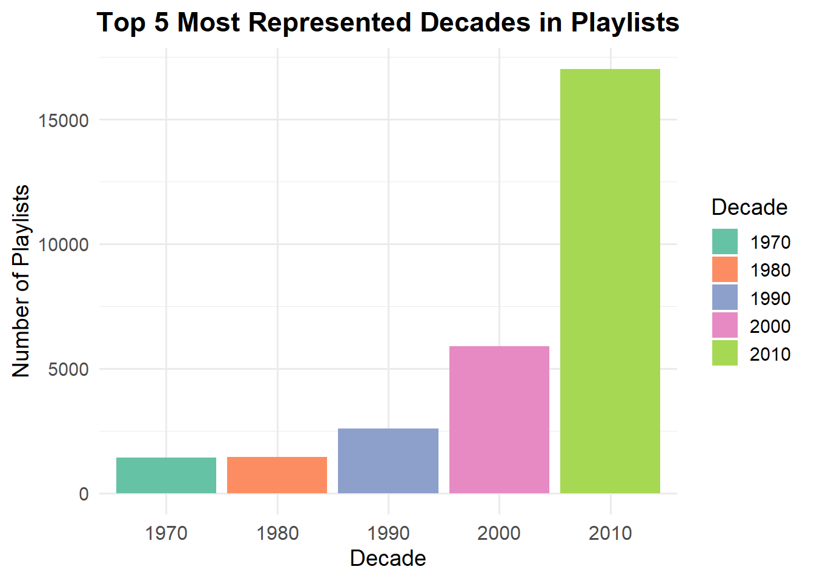
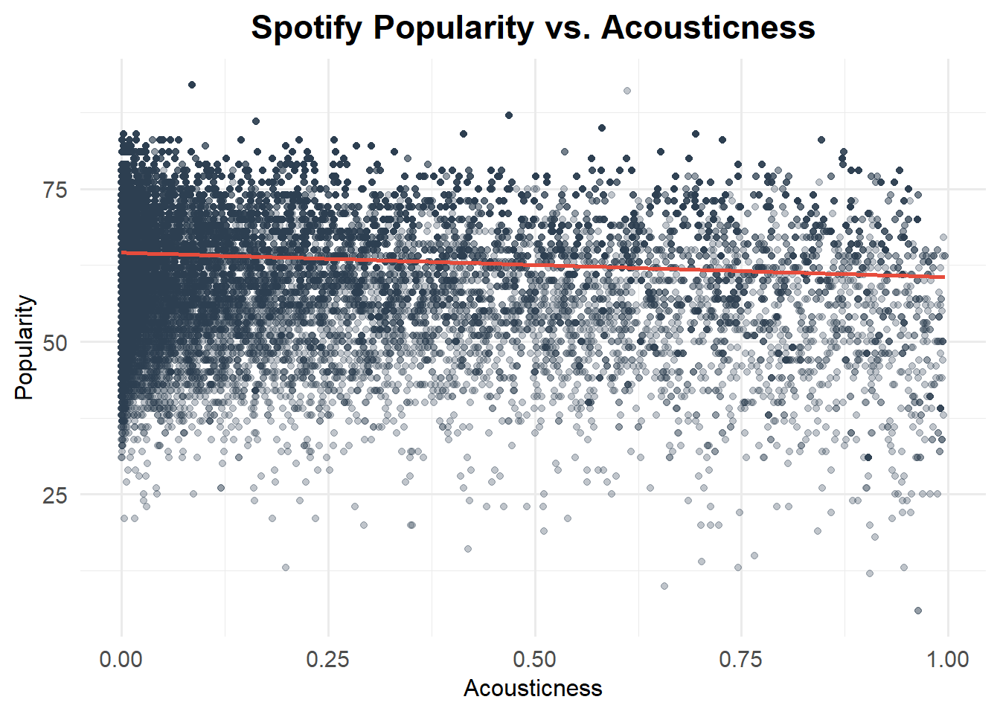

In this project, we harness Spotify’s rich dataset to answer a simple but compelling question: what makes a song not just good, but universally loved? By tapping into two distinct data exports, one detailing track popularity metrics and another cataloguing song attributes (tempo, key, danceability, and energy)—we can move beyond subjective taste and build an evidence‑backed “ultimate playlist.”
This project is also insipired by the “All Rise” playlist, by Mr Barney Stinson, as the Ultimate Playtlist helps define a great aggregation of music into a single playlist based on what we love to hear most.
Below, we will begin with the two datasets that will be used from this project.
Data
Code
load_songs <-function() {library(readr) dir_path <-"data/mp03" file_name <-"songs.csv" file_path <-file.path(dir_path, file_name)#checking dupolicate so that github will not block itif (!dir.exists(dir_path)) {dir.create(dir_path, recursive =TRUE) }# downloadif (!file.exists(file_path)) {download.file("https://raw.githubusercontent.com/gabminamedez/spotify-data/refs/heads/master/data.csv",destfile = file_path,mode ="wb" ) }# reading in dataset file_path |>read_csv(show_col_types =FALSE)}songs_df <-load_songs()head(songs_df)
Thanks to the github user, gabminamedez, we have a master file of a catalogue of songs that contains their respective propertiers such as name, release_date, dancebility, energy and much more that will be integral for our analysis.
library(dplyr)library(tidyr)library(stringr)strip_spotify_prefix <-function(x) {str_extract(x, ".*:.*:(.*)", group =1)}playlist_df <- playlists[[1]] |># 1. Keep just the playlist info + the tracks columnmutate(playlist_name = name,playlist_id =strip_spotify_prefix(pid),playlist_followers = num_followers ) |>select(playlist_name, playlist_id, playlist_followers, tracks) |>unnest(tracks) |># These are more of the columns that were specifid we needed for this projectmutate(playlist_position =row_number(), artist_name = artist_name, artist_id =strip_spotify_prefix(artist_uri),track_name = track_name,track_id =strip_spotify_prefix(track_uri),album_name = album_name,album_id =strip_spotify_prefix(album_uri),duration = duration_ms ) |>select( playlist_name, playlist_id, playlist_position, playlist_followers, artist_name, artist_id, track_name, track_id, album_name, album_id, duration )# Look at the first few rowshead(playlist_df)
How many distinct tracks and artists are represented in the playlist data?
Code
library(dplyr)library(knitr)playlist_df |>summarise(`Distinct Tracks`=n_distinct(track_id),`Distinct Artists`=n_distinct(artist_id) ) |>kable(caption ="Unique Number of Artisits & Tracks",align ="c" )
Unique Number of Artisits & Tracks
Distinct Tracks
Distinct Artists
34443
9754
The playlist dataset contains 34,443 distinct tracks and 9,754 distinct artists. Quite a large range!
What are the 5 most popular tracks in the playlist data?
Code
playlist_df |>count( track_name, artist_name, album_name,name ="Appearances" ) |>arrange(desc(Appearances)) |>head() |>rename(`Track Name`= track_name,`Artist Name`= artist_name,`Album Name`= album_name,`Number of Playlist Appearances`= Appearances ) |>kable(caption ="Most Popular Tracks in Playlist Dataset",align ="c" )
Most Popular Tracks in Playlist Dataset
Track Name
Artist Name
Album Name
Number of Playlist Appearances
One Dance
Drake
Views
55
HUMBLE.
Kendrick Lamar
DAMN.
52
Broccoli (feat. Lil Yachty)
DRAM
Big Baby DRAM
50
Closer
The Chainsmokers
Closer
46
Congratulations
Post Malone
Stoney
44
Don’t Let Me Down
The Chainsmokers
The Chainsmokers- Japan Special Edition
42
In the table above, we display the top songs in the playlist dataset. “One Dance” by Drake, takes top spot as it appears in 55 different playlists.
What is the most popular track in the playlist data that does not have a corresponding entry in the song characteristics data?
Code
playlist_df |>anti_join(songs_df, by =c("track_id"="id")) |>count( track_name, artist_name, album_name,name ="Appearances" ) |>arrange(desc(Appearances)) |>slice_head(n =1) |>rename( `Track Name`= track_name,`Artist Name`= artist_name,`Album Name`= album_name,`Number of Playlist Appearances`= Appearances ) |>kable(caption ="The Most Popular Track that is not in both Datasets",align ="c" )
The Most Popular Track that is not in both Datasets
Track Name
Artist Name
Album Name
Number of Playlist Appearances
One Dance
Drake
Views
55
The song “One Dance” by Drake, does not appear in the songs characteristics data “songs_df”.
According to the song characteristics data, what is the most “danceable” track? How often does it appear in a playlist?
The most popular playlist on Spotify is “Tangled”, with 1038 followers.
Task 5: Visually Identifying Characteristics of Popular Songs
Inner-joiing both the song characteristics & playlist information datasets. Dataframe will be called inner_joined_data.
Code
inner_joined_data <- songs_df |># rename the song‐data 'id' column so it matchesrename(track_id = id) |># now do the join by track_idinner_join(playlist_df, by ="track_id")head(inner_joined_data)
Is the popularity column correlated with the number of playlist appearances? If so, to what degree?
Code
library(ggplot2)track_stats <- inner_joined_data |>count(track_id, popularity, name ="play_count")#Pearson correlation between play count and popularitycorr_coef <-cor(track_stats$play_count, track_stats$popularity)print(paste("Pearson correlation:", round(corr_coef, 3)))
[1] "Pearson correlation: 0.488"
Code
#Scatterplottrack_stats |>ggplot(aes(x = play_count, y = popularity)) +geom_point(alpha =0.4, size =2, color ="#2C3E50") +geom_smooth(method ="lm", color ="#E74C3C", se =FALSE) +scale_x_log10() +labs(title ="Spotify Popularity vs. # of Playlist Appearances",subtitle =paste0("Pearson r = ", round(corr_coef, 2)),x ="Playlist Appearances",y ="Spotify Popularity " ) +theme_minimal(base_size =14)
Code
pop_cutoff <-70
We conducted a Pearson correlation analysis to examine whether a song’s popularity score is related to its playlist position. The resulting correlation coefficient of 0.49 indicates a moderate positive relationship: in general, more‑popular songs tend to appear earlier in playlists. However, the correlation is far from perfect, so highly popular tracks can still show up infrequently—or later—on certain playlists.
In what year were the most popular songs released?
Code
year_popularity <- inner_joined_data |>filter(year >=1950) |>group_by(year) |>summarise(median_popularity =mean(popularity),.groups ="drop" ) |>arrange(desc(median_popularity))# 3. Plot (ticks every 3 years on the x‑axis)year_popularity |>ggplot(aes(x = year, y = median_popularity)) +geom_point(size =3, color ="#2C3E50") +geom_line(color ="#E74C3C", size =1) +scale_x_continuous(breaks =seq(1950, max(year_popularity$year), by =3) ) +labs(title ="Mean Spotify Popularity by Release Year (1950+)",x ="Release Year",y ="Mean Popularity" ) +theme_minimal(base_size =14) +theme(axis.text.x =element_text(angle =45, hjust =1) )
Over time, songs have generally grown in popularity. Beginning in the 1980s, however, the upward trend levels off, implying that a greater volume of popular tracks was released. This plateau likely reflects wider access to music via radio, television, physical media, and eventually the internet.
The chart plots average danceability (0–1 scale) in 25‑year release intervals. Danceability climbs steadily from the 1950s, reaching its highest point in 2020 during the 2010s, indicating that songs have become progressively more dance‑friendly over time.The value was at .673.
Which decade is most represented on user playlists?
Code
inner_joined_data |>mutate(decade = (year %/%10) *10) |>count(decade, name ="Number Of Playlists") |>arrange(desc(`Number Of Playlists`)) |>slice_head(n =5) |>ggplot(aes(x =factor(decade),y =`Number Of Playlists`)) +geom_col() +labs(title ="Top 5 Most Represented Decades in Playlists",x ="Decade",y ="Number of Playlists" ) +theme_minimal()

The 2010s have by far been the most reresented on users playlists.
Create a plot of key frequency among songs. Because musical keys exist in a ‘cycle’, your plot should use polar (circular) coordinates.
Code
key_counts <- inner_joined_data |>count(key, name ="freq") |>arrange(freq)ggplot(key_counts, aes(x =factor(key), y = freq)) +geom_col(fill ="#FF6347", width =0.7) +# tomato‐red barscoord_polar(theta ="x", start =0) +# switch to polar coordslabs(title ="Frequency of Musical Keys in Joined Data",x ="Key (0 = C, …, 11 = B)",y ="Number of Songs" ) +theme_light(base_size =14) +# clean backgroundtheme(plot.title =element_text(face ="bold", hjust =0.5),axis.text.x =element_text(size =12),panel.grid.major.y =element_line(color ="grey80"),panel.grid.minor =element_blank() )
The polar plot charts how frequently each musical key—numbered 0 through 11—occurs. It clearly highlights which keys dominate the songs in users’ playlists.
What are the most popular track lengths? (Are short tracks, long tracks, or something in between most commonly included in user playlists?)
Code
library(dplyr)library(ggplot2)# 1. Bin track lengths into categories (in minutes)length_bins <- inner_joined_data |>mutate(length_min = duration /60000,length_bin =case_when( length_min <2~"< 2 min", length_min <4~"2–4 min", length_min <6~"4–6 min", length_min <8~"6–8 min",TRUE~"8+ min" ),length_bin =factor( length_bin,levels =c("< 2 min", "2–4 min", "4–6 min", "6–8 min", "8+ min") ) )length_freq <- length_bins |>count(length_bin, name ="freq") |>arrange(desc(freq))# 3. Plot the distribution as a bar chartlength_freq |>ggplot(aes(x = length_bin, y = freq)) +geom_col(fill ="#1ABC9C", width =0.7) +labs(title ="Track Lengths in User Playlists",x ="Track Length",y ="Number of Appearances" ) +theme_minimal(base_size =14) +theme(axis.text.x =element_text(size =12),axis.title =element_text(size =14),plot.title =element_text(size =16, face ="bold", hjust =0.5) )
The chart compares track length (in minutes) with how often songs appear in playlists. Most tracks cluster in the 2–4‑ and 4–6‑minute ranges, suggesting that songs of these lengths tend to be the most popular. Tracks shorter than two minutes or longer than six show a sharp drop‑off, indicating that listeners are less likely to include unusually brief or extended songs in their everyday playlists.
Do higher‑energy songs tend to be more popular on Spotify?
inner_joined_data |>ggplot(aes(x = energy, y = popularity)) +geom_point(alpha =0.4, size =2) +geom_smooth(method ="lm", se =FALSE, color ="#E74C3C") +labs(title ="Spotify Popularity vs. Song Energy",subtitle =paste0("Pearson r = ", round(corr_coef, 2)),x ="Energy (0–1)",y ="Spotify Popularity (0–100)" ) +theme_minimal(base_size =14)
A Spearman correlation of 0.02 between a track’s energy and its popularity shows virtually no systematic connection—amping up the energy does not, on its own, catapult a song onto more playlists. The coefficient is so close to zero that random variation could overwhelm any real effect, hinting (if anything) at a faintly opposite trend. In practice, elements like melody, marketing reach, and cultural zeitgeist likely play a much larger role in determining whether a track catches fire with listeners.
Do more acoustic songs tend to be more or less popular on Spotify?
Code
inner_joined_data |>ggplot(aes(x = acousticness, y = popularity)) +geom_point(alpha =0.3, size =1.5, color ="#2C3E50") +geom_smooth(method ="lm", se =FALSE, color ="#E74C3C") +labs(title ="Spotify Popularity vs. Acousticness",x ="Acousticness (0–1)",y ="Popularity (0–100)" ) +theme_minimal(base_size =14) +theme(plot.title =element_text(face ="bold", hjust =0.5),axis.title =element_text(size =12) )

There is a noticeable negative linear relationship between a track’s popularity and its acousticness—the more acoustic a song sounds, the less likely it is to rack up high popularity scores. Both metrics are right‑skewed, meaning most songs cluster at the “high‑popularity / low‑acousticness” end of the spectrum. In other words, if you want your next release to land on more user‑generated playlists, consider trimming back the unplugged, acoustic vibe and leaning into a more produced sound.
Does the higher danceability of a song dictate its popularity?
dance_pop |>ggplot(aes(x = danceability, y = popularity)) +geom_point(alpha =0.4, size =2, color ="#2C3E50") +geom_smooth(method ="lm", color ="#E74C3C", se =FALSE) +labs(title ="Does Higher Danceability Predict Popularity?",subtitle =paste0("Pearson r = ", round(corr_coef, 2)),x ="Danceability (0–1)",y ="Spotify Popularity (0–100)" ) +theme_minimal(base_size =14)
Above, we dive into if a song has a higher dancebaility can it also have more popularity? By computing a spearman correlation coefficient, the results show with a 0.12 that there is no association with one another.
Building The Ultimate Playlist
To craft the ultimate playlist, we’ve selected A$AP Rocky’s “Fashion Killa” as the anchor track—the stylistic benchmark against which every other song will be measured. In the sections that follow, we’ll perform a data‑driven analysis of tempo, key, mood, and lyrical themes to uncover the tracks that complement its sleek, laid‑back vibe. The goal is a seamlessly flowing set that not only echoes the energy of “Fashion Killa” but also keeps listeners engaged from start to finish.
Video For Fashion Killa
Heuristic 1: What other songs commonly appear on playlists along side this song?